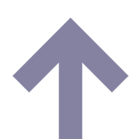
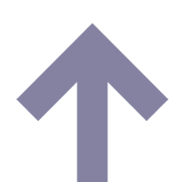

Enrique Alfaro hizo ntareas en este eje. Conoce su desempeño haciendo click en cada compromiso para ver sus indicadores. + Ver- Ocultar todos los mindicadores
Enrique Alfaro hizo ntareas en este eje. Conoce su desempeño haciendo click en cada compromiso para ver sus indicadores. + Ver- Ocultar todos los mindicadores
 
Guadalajara
¿Cómo calificas esta iniciativa?
¿Crees que a los alcaldes les falta algún compromiso?

Guadalajara
¿Cómo calificas esta iniciativa?
¿Crees que a los alcaldes les falta algún compromiso?
Cuando votamos por nuestro alcalde votamos también por sus propuestas. Recuperamos aquí compromisos para darles seguimiento con indicadores.
Esta iniciativa es impulsada por:

Los siguientes PNGs se presentan enlazados a su pagina de The Noun Project. Agradecemos a los autores liberar sus diseños con licencias abiertas.
 DelToroIsmael
DelToroIsmael